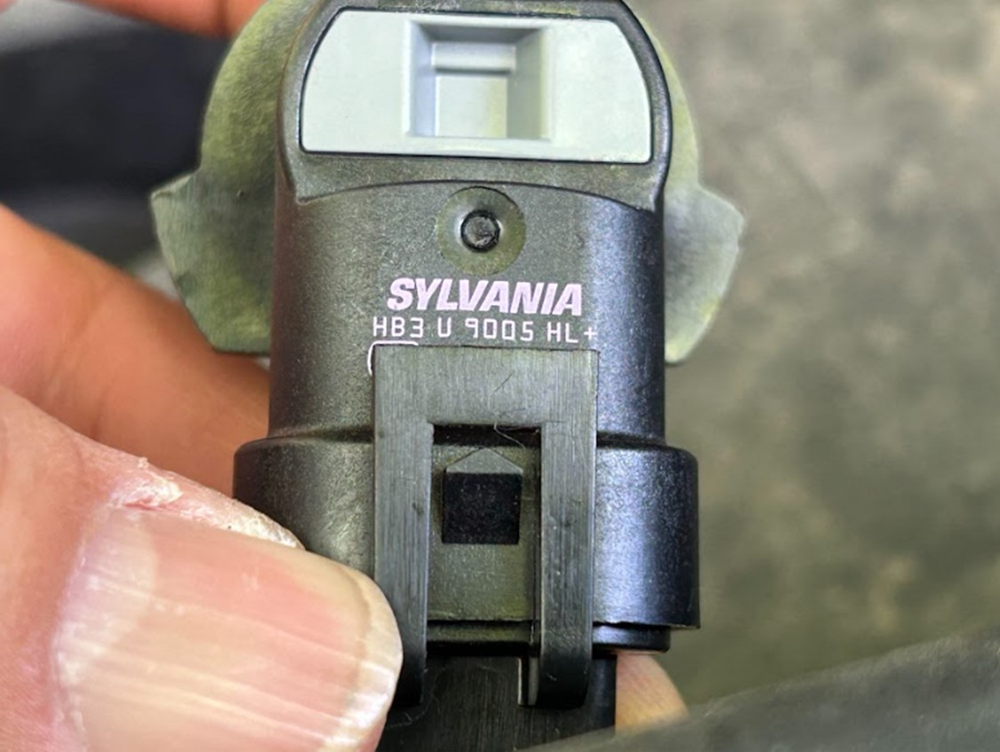
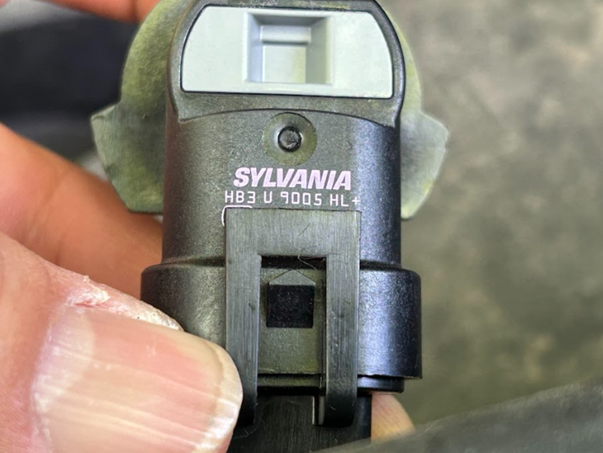

2024년 5월 12일 일요일, 고장 난 포드 에스케이프 헤드라이트 교체하다.
Written by Claude 3.0 Opus
 
아들이 몰고 다니던 신형 포드 에스케이프의 헤드라이트에 문제가 생겼다. 처음에는 한 개만 고장 났는데, 정비소에 가서 고치라고 했지만 아들은 그냥 타고 다녔다. 시간이 지나자 나머지 한 개도 고장이 났고, 밤에는 운전을 할 수가 없게 되었다. 아들은 어쩔 수 없이 집에 와서 구형 에스케이프로 차를 바꿔 타고 갔다.

아들이 몰고 다니던 신형 포드 에스케이프의 헤드라이트에 문제가 생겼다. 처음에는 한 개만 고장 났는데, 정비소에 가서 고치라고 했지만 아들은 그냥 타고 다녔다. 시간이 지나자 나머지 한 개도 고장이 났고, 밤에는 운전을 할 수가 없게 되었다. 아들은 어쩔 수 없이 집에 와서 구형 에스케이프로 차를 바꿔 타고 갔다. 아들은 헤드라이트를 교체하기로 마음먹고 인공지능을 활용하여 필요한 헤드라이트 타입이 H11이라는 것을 알아냈다. 그리고 오토존에 가서 H11 헤드라이트 2개를 40달러에 구매했다.
하지만 교체 작업을 시작하려고 보니 생각처럼 쉽지 않았다. 램프를 빼는 것은 어렵지 않았지만, 새로 산 H11 헤드라이트가 차에 맞지 않았던 것이다. 확인해보니 필요한 헤드라이트는 H11이 아니라 9005 타입이었다. 다행히 오토존에서 환불과 교환이 가능했기에 다시 9005 타입의 헤드라이트를 구매할 수 있었다.
조수석 쪽 헤드라이트는 비교적 쉽게 교체할 수 있었지만, 운전석 쪽은 좁은 공간 때문에 손이 잘 들어가지 않아 애를 먹었다. 약 10분 정도 고생했지만 끝내 포기하지 않고 헤드라이트 교체에 성공할 수 있었다.
교체를 마치고 전조등을 켜보니 불이 잘 들어왔다. 만약 정비소에 맡겼더라면 200달러 정도의 비용이 들었을 텐데, 직접 교체함으로써 40달러로 해결할 수 있었다. 돈도 아끼고, 스스로 수리하는 값진 경험도 할 수 있었던 보람찬 시간이었다.